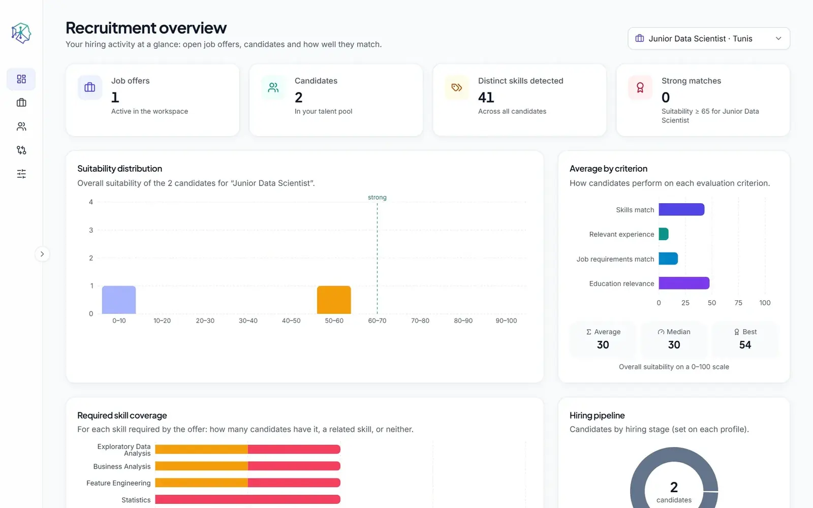

IntelliHire
Une application web de recrutement qui extrait les profils des candidats à partir de CV en PDF et classe chaque candidat par rapport à chaque offre, avec une explication claire de chaque score.

La problématique
Les recruteurs consacrent une grande partie de leur temps à lire des CV et à les comparer aux exigences des postes. Les filtres par mots-clés écartent des candidats qui décrivent la même compétence autrement, et un score sans explication inspire peu confiance.
Objectifs
- Extraire automatiquement les compétences, l'expérience et la formation de chaque candidat à partir de CV en PDF.
- Évaluer chaque candidat par rapport à chaque offre selon des critères clairs et distincts.
- Expliquer chaque score en langage clair, avec les compétences correspondantes et manquantes.
- Aider les recruteurs à comparer les candidats côte à côte et à suivre les étapes du recrutement.
Fonctionnalités clés
- Analyse des CVExtraction du texte avec PyMuPDF, OCR Tesseract pour les pages numérisées, ou saisie manuelle d'un candidat.
- Extraction du profilCompétences, expérience et formation identifiées avec spaCy et un dictionnaire de compétences.
- MatchingSimilarité lexicale (TF-IDF, BM25) et sémantique (Sentence Transformers), avec pondérations et seuils configurables.
- Quatre critères de scoreCompétences, expérience pertinente, exigences du poste et pertinence de la formation.
- ExplicationsChaque score indique les compétences correspondantes, partielles et manquantes en langage clair.
- ComparaisonComparaison des candidats côte à côte avec une recommandation, et suivi des étapes par offre.
Ma contribution
J'ai conçu et développé l'application : l'analyse des CV et l'extraction par NLP, le scoring lexical et sémantique, l'API REST FastAPI avec un schéma PostgreSQL géré par migrations versionnées, les tests automatisés avec pytest, et l'interface React et TypeScript.
Captures d'écran
L'interface de l'application est en anglais.
Technologies
- Python
- spaCy
- Sentence Transformers
- scikit-learn (TF-IDF)
- BM25
- PyMuPDF
- Tesseract OCR
- NumPy
- FastAPI
- Pydantic
- SQLAlchemy
- PostgreSQL
- pytest
- React
- TypeScript
- Vite
- Tailwind CSS
- Recharts
- Docker Compose